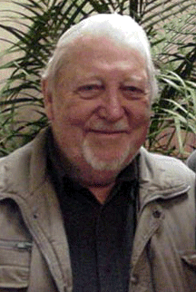

Stevens naît le à Round Prarie (Minnesota), où il passe sa
jeunesse.
Armée
Stevens en à Mobile (Alabama) avant d'aller dans en guerre
dans le Pacifique
En il s'engage dans l'Armée Peu après le lycée à San Pedro (Californie). Affecté à l'Army Air Force, il devient un très jeune 2nd lieutenant
du Corps de l'US Army, obtenant des diplômes de Formation de Cadet
d'Aviation et de Formation Avancée de Pilote de Chasse à l'Ecole de Maintenance et Réparation de Lockheed Aircraft en 1943. Il entre ensuite à l'Ecole de Pilotes d'Essai du
Corps Aérien de Kelly Field, où il apprend à piloter tous les appareils du Corps Aérien de l'époque, ainsi que
quelques appareils de US Navy.
Ptarmigon
A partir de , l'ATIC de Wright Field l'envoie en Alaska
superviser une équipe hautement classifiée de spécialistes techniques installant un équipement de collecte de
données de haute technologie à bord du des B-29s du SAC dans le cadre du
projet Ptarmigon déjà en cours – un projet de recherche photographiant et cartographiant chaque pouce des terres
et des mers arctiques.
Cet équipement est conçu pour capturer, enregistrer et analyser toutes les émissions EMF en Arctique,
photographier tous les phénomènes anormaux, et enregistrer toutes perturbations des systèmes électriques et
moteurs de l'appareil - comme les influences externes provoquées par des ovnis - lors de vols visant la Russie.
Les données (films, photos...) sont alors acheminée de nuit à Washington. Bien que
Stevens n'aie pas vu les films en question, les récits ou rumeurs qu'il entend de la part du personnel le
convainquent de l'intérêt de l'étude des ovnis, en particulier sur le plan photographique.
Ufologie

Stevens
A partir de , de retour de son affectation, Stevens entame son propre effort de recherche et de
collecte, finissant par amasser une des plus grandes collection privée de photographies d'ovnis au monde.
Il quitte l'armée en , déménageant à Tucson (Arizona) où il peut
collaborer activement avec l'APRO, dont il devient directeur des enquêtes. En
(?) il crée UFO Photo Archives. Il publie
des rapports sur les événements, et rédige de nombreux articles illustrés pour de nombreuses publications sur les
ovnis. Désenchanté par le manque de détail sur les événements de contact rapportés dans les livres et journaux de
l'époque, il commence à préparer des rapports détaillés de ses propres investigations. Il écrit ou co-écrit plus de
22 livres et continue ses enquête à ses propres frais, toujours à la recherche des réponses élusives aux nombreuses
questions soulevées par ce phénomène.
Il travaille pour Hamilton Aircraft jusqu'en .
Colonel, Stevens est Directeur du Congrès International sur les Ovnis depuis son démarrage.
Meier
En , Stevens reçoit la visite à Tucson de Timothy Good et Lou Zinsstag, qui lui montre 16 photos très nettes de soucoupes faites par Billy Meier. A première vue Stevens les trouve trop belles
pour être vraies, mais continue d'entretenir une correspondance avec Zinsstag et Ilse VonJacobi,
qui a écrit le premier article sur Meier. Il apprend alors l'existence d'un film, en plus des photos.
Le , Stevens se rend en Suisse pour, accompagné de VonJacobi,
rendre visite à Meier, ainsi que d'autres témoins (Hans Schutzbach, Harold Proch et sa soeur). Apparemment, Meier,
qui ne parlait pas un mot d'anglais peu avant, a appris la langue rapidement. Stevens achète 300 photos à Meier,
ainsi que des documents comme des notes de contacts.
Par la suite, alors que Martin Sorge a mis la main sur des photos de maquettes faites
par Meier, ce dernier écrit à Stevens pour lui assurer qu'il n'a jamais voulu faire passer ces maquettes pour des
ovnis.
Son enquête sur le sujet, avec Lee Elders et Tom Welch, restera cependant favorable à Meier Stevens, W. C: UFO
contact from the Pleiades, 1979
Déchéance
Vers , Stevens plaide coupable) pour actes sexuels sur une fille de 14/15 ans, notamment :
3 charges de molestation d'enfant ;
4 charges de fournir des éléments obscènes ou dangereux à des mineurs ;
2 charges liés à des films et images de mineurs dans des actes sexuels.
Il passe plusieurs années en détention à la prison d'état de Douglas (Arizona)McNeil, Legs: "Loving
The Aliens", Spin, 1987-07
p. 63
En , il publie un livre sur le crash de
AztecStevens, W. C.: UFO Crash at Aztec: A Well-Kept Secret, 1986.
Stevens meurt le dans sa maison de Tucson, d'une
défaillance respiratoire (attaque cardiaque ?).